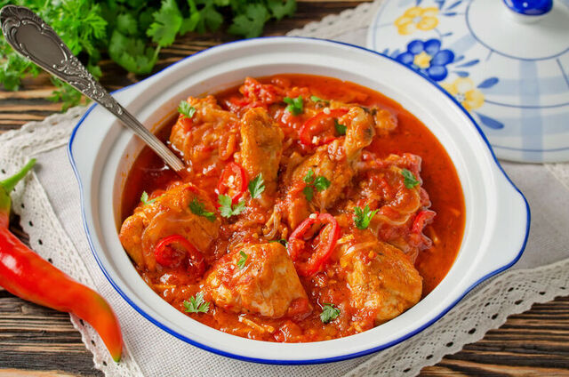

Chakhokhbili (Georgian stewed chicken)

Chakhokhbili recipe
How to pronounce Chakhokhbili - Chalk hoke
(but with a throat sound) bee lee.
Chakhokhbili is a well know Georgian dish of stewed chicken and fresh herbs.
It is originally made with pheasant, but most people use chicken.
The key to getting amazing tasting chakhokhbili is using homegrown tomatoes.
Anyone who has a garden of their own can not deny that homegrown tomatoes outdo
any store-bought ones. This is why you should make this dish before tomatoes
season is over.
The recipe has all the details, with complete steps and ingredients.
Ingredients:
- 3 pounds chicken thighs, wings, and unboned breasts.
- 5 tablespoons unsalted butter.
- 3 medium onions, coarsely chopped.
- 1 tablespoon all-purpose flour.
- 1 1/4 cups Chicken Consomme.
- 6 medium tomatoes, blanched, peeled, and quartered.
- 1/4 cup dry white wine.
- 2 tablespoons freshly squeezed lemon juice. Salt to taste.
- 2 tablespoons tomato paste.
- 1 tablespoon each of finely chopped fresh cilantro and basil.
- 1 1/2 teaspoons each finely chopped fresh tarragon and mint.
- 1/2 teaspoon paprika.
- 3 tablespoons finely chopped parsley.
- 1 clove garlic, crushed.
- Thin lemon slice for garnish.
Directions:
- Dry the chicken with paper towels.
- Melt 2 tablespoons of butter in a medium size Dutch oven,
add chicken pieces, and brown on each side for about 10 minutes.
- Remove the chicken and set aside.
- Melt 2 more tablespoons of butter in the Dutch oven,
add the onions, and over medium heat for 10 minutes.
- In a small skillet stir the flour over low heat for 3 minutes.
- Add the remaining tablespoon of butter, stirring continuously,
and cook for 2-3 minutes more.
- Pour the sauce over the onions in the Dutch oven, stir, then add the tomatoes,
wine, and lemon juice, and bring to a boil.
- Sprinkle the chicken pieces with salt and add to the pot.
- Cover and cook over moderate heat for 10 minutes, then add the tomato paste and
1/4 cup of chicken broth of water, if necessary.
- Stir, cover, and continue to simmer for 10 minutes more.
- Mix the herbs and spices, reserving the garlic and 2 tablespoons of
the chopped parsley, and add to the stew, simmer for 3-5 minutes.
- Add the garlic, cover, remove the pot from the heat and
let the fragrance infuse for 3 minutes longer.
Bon appetite!